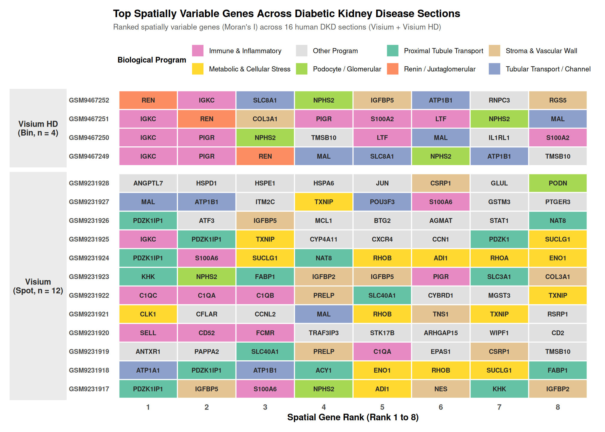
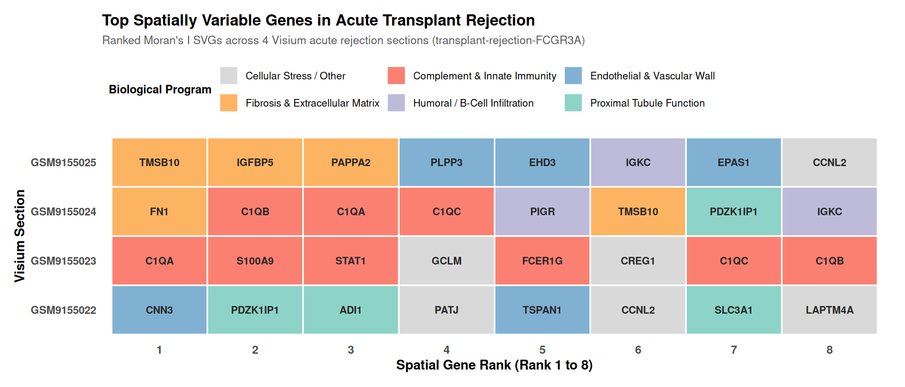
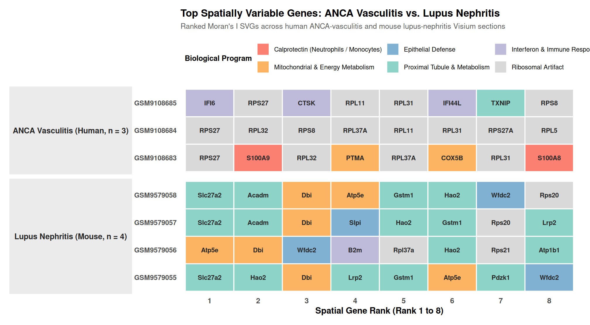

The cohort is not just healthy kidney; it spans the diseases that destroy the organ: diabetic kidney disease, transplant rejection (acute and chronic), ANCA-associated vasculitis, and lupus nephritis, alongside the acute injury model of Chapter 7. This chapter asks what each disease looks like through the spatial lenses already established. The answers are readouts, observations of what the data show, not claims about disease mechanism, and they come with the platform caveats stated throughout this analysis.
The human DKD arm spans whole-transcriptome Visium (12 sections) and Visium HD (4 sections). The spatially variable program of these sections is the cortex’s own: renin (REN) and podocyte (NPHS2) lead the list.

Renin marks juxtaglomerular cells within the JGA, linking the spatial landscape to the renin–angiotensin–aldosterone system targeted by major antihypertensive therapies in diabetic kidney disease, while NPHS2 marks podocytes, a key component of the glomerular filtration barrier whose injury is central to diabetic glomerulopathy. The cortex’s spatial backbone, including renin and podocyte programs, is retained in whole-transcriptome space at both spot and bin resolution. These observations provide a spatial readout of DKD-associated cortical organization: disease-related changes are expressed within, and superimposed on, the kidney cortex’s intrinsic cellular programs.
The transplant arm is this analysis’s two-platform story in miniature. At region scale, 48 GeoMx ROIs from a chronic-rejection cohort reconstruct their own compartments (vessel ROIs pericyte-dominant, glomerular ROIs podocyte-enriched, capillary ROIs immune-enriched; Chapter 5). Chronic antibody-mediated rejection attacks the peritubular capillary bed; the compartment architecture that the modules reconstruct is the architecture under attack. At spot scale, the acute-rejection Visium sections surface tubular programs (PDZK1IP1, SLC3A1) as their spatial backbone. The two platforms see the same disease at different scales, and both readouts are the spatial program of the transplanted kidney under immune pressure.

The ANCA-vasculitis sections show a strong inflammatory/myeloid signal among their top spatially variable genes, including S100A8 and S100A9, which encode the calprotectin complex and are strongly associated with neutrophils and inflammatory monocytes. These cells are prominent contributors to ANCA-associated inflammation. They appear alongside a set of ribosomal genes; I will flag the potential technical contribution of that ribosomal signal explicitly (Chapter 9) rather than interpret it as disease biology. The S100A8/A9 signal therefore provides a spatial readout of myeloid inflammation. The lupus sections in the mouse are enriched for proximal-tubule metabolic genes, reflecting the cortical tubular program captured at spot resolution.
